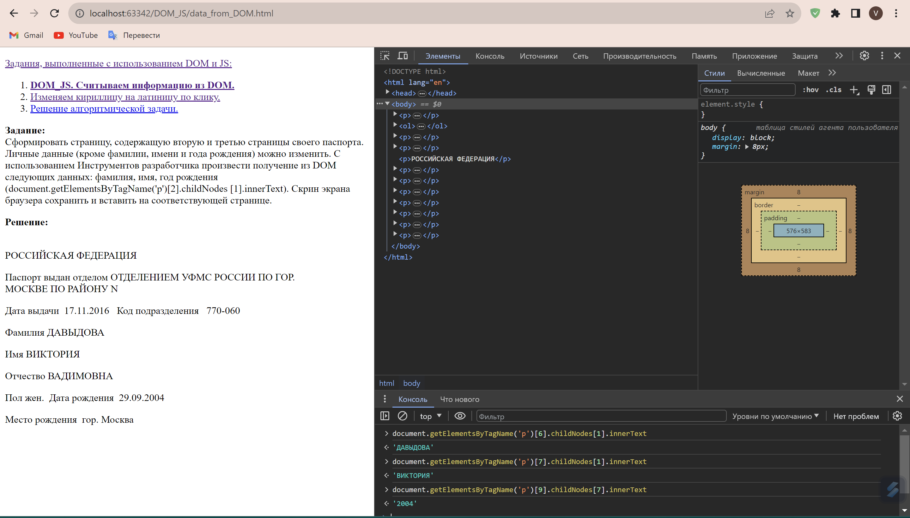

Задания, выполненные с использованием DOM и JS:
Задание:
Сформировать страницу, содержащую вторую и третью страницы своего паспорта. Личные данные
(кроме фамилии, имени и года рождения) можно изменить. С использованием Инструментов разработчика произвести
получение из DOM следующих данных: фамилия, имя, год рождения (document.getElementsByTagName('p')[2].childNodes
[1].innerText). Скрин экрана браузера сохранить и вставить на соответствующей странице.
Решение:
РОССИЙСКАЯ ФЕДЕРАЦИЯ
Паспорт выдан отделом ОТДЕЛЕНИЕМ УФМС РОССИИ ПО ГОР.
МОСКВЕ ПО РАЙОНУ N
Дата выдачи 17.11.2016 Код подразделения 770-060
Фамилия ДАВЫДОВА
Имя ВИКТОРИЯ
Отчество ВАДИМОВНА
Пол жен. Дата рождения 29.09.2004
Место рождения гор. Москва
Скрин экрана браузера:
